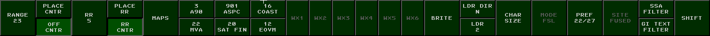
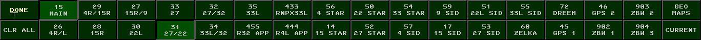
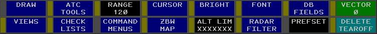

Five ways to pack the Scope's toolbar tighter than today's single row of margined buttons, beside today's bar for comparison. Every lane draws the top of a Scope window to scale (1 CSS px = 1 DIP) at the default 1360 DIP width and at a narrow 1000 DIP one, then the same layout with the MAPS menu open, to show where its tray goes. All lanes keep the 15 buttons in today's order with today's values (RANGE 40, so OTHERS PARTIAL, VECTOR 1m OWN, HIST 5; PROFILE MIXED), JetBrains Mono 12 px, today's navy colours, and a tear-off strip on every button but DEL TEAROFF (shown gold, as on hover, on PROFILE in each first frame). The faint targets show how much of the scope each layout covers. Every number below is measured off this page as it renders, not estimated.
measuring...
What CRC draws (its own screenshots, at their own pixel size, not to the scale above)

STARS main DCB (docs/crc/img/stars/dcb/main-menu.png, 1510 x 80 px). Two-line tiles packed edge to edge: full-height tiles for a button with a value (RANGE 23, RR 5) or a menu (MAPS, BRITE), and half-height tiles stacked in pairs (PLACE CNTR over OFF CNTR, 3 A90 over 22 MVA, LDR DIR N over LDR 2). SHIFT at the far right.

STARS MAPS submenu (maps-submenu.png, 1368 x 80 px): it replaces the DCB in place, two rows of map tiles (ID over short name), DONE and CLR ALL at the left.

ERAM Master Toolbar (docs/crc/img/eram/toolbars/main.png, 752 x 69 px): a fixed 2 x 8 grid, each button with its gold tear-off bar on its left.
Tear-off strip: transparent until the pointer is over it, then gold (shown on PROFILE). On a tile it is a 4 px band inside the tile's left edge, so it costs no width. A cyan border marks an active button (MAPS while its tray is open; the "on" maps in a tray). On a tile, a small ▸ in the top-right corner marks a menu.